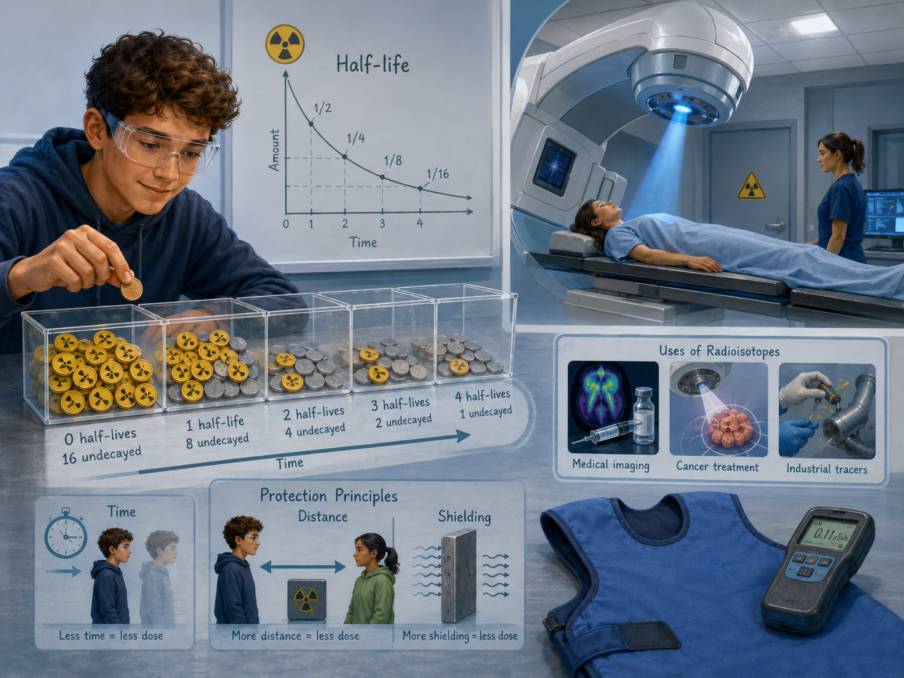

Strahlendosis und Strahlenschutz
Leitfrage: Wie kann man sich vor ionisierender Strahlung sinnvoll schützen?

Kompetenz
Gefährdungen und Schutzmaßnahmen erklären und Dosisdaten beurteilen.
Kompetenz
Experimente planen, durchführen oder auswerten
Kompetenz
Alltagsbeispiele fachsprachlich erklären
0. Lernstand: Wo startest du?
Bearbeite diesen Kurzcheck, bevor du in den Lernpfad einsteigst. So erkennst du, ob du zuerst Begriffe wiederholen oder direkt in die Experimente gehen kannst.
Begriffe aktivieren
Ordne dir die wichtigsten Begriffe zu:
Notiere zu zwei Begriffen je einen eigenen Beispielsatz.
Selbsteinschätzung
Tippkarten zur Differenzierung
Öffne die Tippkarten nacheinander. Ab Tippkarte 2 gilt eine kurze Wartezeit, damit du zuerst selbst weiterdenkst.
1. Staunen: Wie kann man sich vor ionisierender Strahlung sinnvoll schützen?
Strahlenschutz ist kein Gefühlsthema, sondern folgt klaren Prinzipien: Aufenthaltszeit verkürzen, Abstand vergrößern, Abschirmung passend wählen.
Eigenes generiertes Lernpfadbild zum Kontext.
Tippkarten zur Differenzierung
Öffne die Tippkarten nacheinander. Ab Tippkarte 2 gilt eine kurze Wartezeit, damit du zuerst selbst weiterdenkst.
2. Vermuten: Was ändert sich?
Ordne die Situation: Welche Größe wird verändert und welche Wirkung erwartest du? Nutze Fachsprache und halte die Vermutung kurz fest.
Wenn …
eine Einflussgröße verändert wird, muss die Wirkung beobachtbar sein.
Dann …
beschreibe, was deiner Meinung nach größer, kleiner, schneller, schwächer oder stärker wird.
Weil …
verknüpfe deine Vermutung mit einem Modell oder einer Formel.
Tippkarten zur Differenzierung
Öffne die Tippkarten nacheinander. Ab Tippkarte 2 gilt eine kurze Wartezeit, damit du zuerst selbst weiterdenkst.
3. Experiment vorbereiten und durchführen
Kurzanleitung zum Versuch
Du arbeitest mit Modellversuchen, Simulationen oder Demonstrationen, um Zufall, Nachweis, Abschirmung und Bewertung zu verstehen.
Ich erwarte …, weil …
Ich sehe/messe …
Das bedeutet physikalisch …
Versuchskarte: Unsichtbare Strahlung modellieren oder nachweisen
Würfel oder Münzen, Tabellenblatt, ggf. Absorbermaterial als Modell, Simulation oder Demo-Messgerät
Lege eine Startmenge fest und definiere eindeutig, wann ein Würfel/Münzwurf als „zerfallen“ gilt.
Führe mehrere Runden durch. Entferne in jeder Runde die als zerfallen markierten Teilchen und zähle den Rest.
Trage Runde und Restanzahl ein. Vergleiche mehrere Gruppen, um Zufallsschwankungen zu erkennen.
Erkläre den Unterschied zwischen zufälligem Einzelereignis und regelmäßigem Verhalten großer Mengen.
Nur Modellversuche selbst durchführen. Echte radioaktive Präparate nur als Lehrerdemonstration nach Strahlenschutzvorgaben.
Modellversuch: Abstandsgesetz mit Licht
Material- kleine Lampe oder LED
- Luxmeter/Smartphone-Sensor
- Lineal
- Papier als Abschirmmodell
- Miss die Beleuchtungsstärke in verschiedenen Abständen.
- Vergleiche die Wirkung von zusätzlicher Abschirmung.
- Übertrage qualitativ auf Strahlenschutz, ohne Licht mit ionisierender Strahlung gleichzusetzen.
- Keine Laser oder sehr hellen Lampen direkt ins Auge richten.
Beobachtung vorbereiten
Lege eine Tabelle mit mindestens zwei Spalten an: Was wird verändert? und Was wird beobachtet?
Skizziere den Aufbau, bevor du misst. Beschrifte die wichtigsten Größen.
Tippkarten zur Differenzierung
Öffne die Tippkarten nacheinander. Ab Tippkarte 2 gilt eine kurze Wartezeit, damit du zuerst selbst weiterdenkst.
Zusatz: Bei Strahlung werden in der Schule häufig Modelle, Simulationen oder Demonstrationsversuche genutzt.
4. Beobachten, auswerten und modellieren
Typische Beobachtung
Die Intensität nimmt mit dem Abstand deutlich ab.
Auswertungsidee
Abstand ist ein wirksames Schutzprinzip; Abschirmung muss zur Strahlungsart passen.
Interaktives Mini-Modell
Verändere die Werte und beschreibe, was sich fachlich ändert.
Messdaten: Abstand und Zählrate
Nutze die Messdaten wie echte Versuchsdaten. Entscheide, ob ein proportionaler, antiproportionaler oder exponentieller Zusammenhang vorliegt.
| Abstand in cm | Zählrate in Impulsen/min |
|---|---|
| 5 | 400 |
| 10 | 100 |
| 20 | 25 |
| 40 | 6 |
Typischer Fehler: Zerfall wird linear gedacht
„Bei einer Halbwertszeit von 10 min zerfallen in jeder weiteren 10-min-Phase gleich viele Kerne.“
Dein Auftrag: Klicke an, welche Korrektur fachlich richtig ist.
Tippkarten zur Differenzierung
Öffne die Tippkarten nacheinander. Ab Tippkarte 2 gilt eine kurze Wartezeit, damit du zuerst selbst weiterdenkst.
Zusatz: Unterscheide Einzelereignis und Statistik: Ein einzelner Zerfall ist zufällig, viele Zerfälle zeigen Muster.
5. Alltagstransfer und Anwendungen
Übertrage das Modell auf neue Situationen. Achte darauf, ob die Bedingungen wirklich vergleichbar sind.
Röntgenschürze
Erkläre die Situation mit dem zentralen Modell dieses Lernpfads.
Abstand bei Prüfstrahlern
Erkläre die Situation mit dem zentralen Modell dieses Lernpfads.
Dosimeter
Erkläre die Situation mit dem zentralen Modell dieses Lernpfads.
Radonlüften
Erkläre die Situation mit dem zentralen Modell dieses Lernpfads.
Optionale Simulation
Für diesen Lernpfad steht der Real- oder Modellversuch im Mittelpunkt. Eine externe Simulation ist nicht zwingend nötig. Vor dem Versuch: Formuliere eine Vorhersage, danach beobachte und erkläre.
Zusatz: Versuchskartei und Anwendungen
Wähle mindestens einen weiteren Versuch oder eine Anwendung aus. Arbeite nach dem Muster Vorhersagen – Beobachten – Erklären: Formuliere zuerst eine Vermutung, führe dann den Versuch aus oder nutze die Simulation und sichere anschließend den Zusammenhang in Fachsprache.
Kurzanleitung für Zusatzversuche und Anwendungen
- Wähle eine Versuchskarte oder Anwendung aus und schreibe zuerst eine Vorhersage auf.
- Nutze Modellversuche oder Simulationen; reale Präparate bleiben Demonstrationsmaterial.
- Notiere mindestens eine Beobachtung oder einen Messwert.
- Erkläre die Beobachtung mit einem Fachbegriff, einer Formel oder einem Modell.
Sicherheitsanker: Reale radioaktive Präparate nur als Demonstration nach Strahlenschutzvorgaben. Nicht berühren, nicht öffnen, Abstand halten.
Abstandsgesetz mit Lichtmodell
Miss die Beleuchtungsstärke einer Lampe in verschiedenen Abständen als Modell für Abstandseffekte.
Material: Lampe, Luxmeter/Smartphone-Sensor, Maßband
Abschirmungsmodell
Vergleiche, wie verschiedene Materialien Licht oder Schall abschwächen, und bespreche die Grenzen des Modells.
Material: Taschenlampe/Schallquelle, Papier, Karton, Metall
Schutzprinzipien-Puzzle
Ordne Situationen den Prinzipien Zeit, Abstand und Abschirmung zu.
Material: Karten mit Situationen
Röntgenschürze
Abschirmung verringert die Dosis empfindlicher Körperbereiche.
Radon im Keller
Lüften und bauliche Maßnahmen können die Belastung senken.
Flugreisen
In großer Höhe ist die kosmische Strahlenbelastung etwas höher.
Sicherheit und digitale Alternative
Keine Realquellen erforderlich; bei Schulquellen gelten ausschließlich die Strahlenschutzvorgaben der Schule.
Entscheidungsaufgabe: Nutzen und Risiko abwägen
Entscheide begründet: Wann ist eine medizinische Anwendung ionisierender Strahlung sinnvoll? Beziehe Nutzen, Dosis und Schutzmaßnahmen ein.
Tippkarten zur Differenzierung
Öffne die Tippkarten nacheinander. Ab Tippkarte 2 gilt eine kurze Wartezeit, damit du zuerst selbst weiterdenkst.
6. Rechentraining: Formeln sicher anwenden
Bearbeite die Aufgaben schriftlich. Schreibe immer zuerst die Formel auf, setze dann die Werte mit Einheiten ein und runde am Ende sinnvoll.
Interaktiver Formeltrainer: Energiedosis berechnen
D = E / m
Ein Gewebeabschnitt der Masse 2,0 kg nimmt 0,004 J Energie auf. Berechne die Dosis in Gy.
Hinweis: 1 Gy = 1 J/kg.
Mehr Formeln: Formelsammlung Klasse 10 · Sicherung: Arbeitsblatt zum Themenblock
1. Energiedosis
Ein Körperteil mit m = 4,0 kg nimmt E = 0,020 J auf. Berechne D.
Kontrolllösung anzeigen
D = 0,020 J / 4,0 kg = 0,005 Gy.
2. Äquivalentdosis
Für γ-Strahlung gilt w_R = 1, für α-Strahlung w_R = 20. Berechne H für D = 0,005 Gy.
Kontrolllösung anzeigen
γ: H = 1 · 0,005 Sv = 0,005 Sv. α: H = 20 · 0,005 Sv = 0,10 Sv.
3. Abstand und Zeit
Wie ändert sich die Dosisleistung, wenn der Abstand verdoppelt und die Aufenthaltszeit halbiert wird?
Kontrolllösung anzeigen
Dosisleistung durch Abstand: 1/4. Gesamtdosis durch halbe Zeit zusätzlich: 1/8 der ursprünglichen Dosis.
Tippkarten zur Differenzierung
Öffne die Tippkarten nacheinander. Ab Tippkarte 2 gilt eine kurze Wartezeit, damit du zuerst selbst weiterdenkst.
Zusatz: Bei Halbwertszeit-Aufgaben zählt zuerst die Anzahl der vergangenen Halbwertszeiten.
7. Sichern: Das bleibt hängen
- Zeit kurz halten
- Abstand vergrößern
- Abschirmung passend wählen
- Dosisdaten brauchen Kontext und Grenzwerte
Tippkarten zur Differenzierung
Öffne die Tippkarten nacheinander. Ab Tippkarte 2 gilt eine kurze Wartezeit, damit du zuerst selbst weiterdenkst.
8. Abschluss: Kompetenzcheck
Bearbeite den kurzen Check. Danach weißt du, was du bereits sicher kannst und was du gezielt wiederholen solltest.
Basis
Erkläre einen zentralen Fachbegriff dieses Lernpfads in einem Satz.
Rechnen
Wähle eine passende Formel aus und kontrolliere die Einheit deines Ergebnisses.
Experiment
Nenne die veränderte Größe, die beobachtete Wirkung und eine mögliche Fehlerquelle.
Transfer
Übertrage die Kernidee auf ein neues Alltagsbeispiel.
Deine Rückmeldung
Tippkarten zur Differenzierung
Öffne die Tippkarten nacheinander. Ab Tippkarte 2 gilt eine kurze Wartezeit, damit du zuerst selbst weiterdenkst.